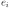
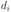
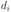
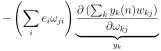
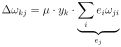

Next: Non-linear networks Up: Deep learning Previous: Learning rule for the
Fig. 2 shows now a network with multiple layers.
The forward progression of the signals  from the input to
the output and follows exactly the same recipe as for the single
layer network above using Eq. 2.
Also the error  at the output layer can simply be calculated
as the difference between the actual output  and the desired output
at the output layer can simply be calculated
as the difference between the actual output  and the desired output  (see
Eq. 3). The problem is how to calculate the
internal errors
(see
Eq. 3). The problem is how to calculate the
internal errors  und
und  and how they change the hidden weights
and how they change the hidden weights
 (see Eq. 10):
(see Eq. 10):
 with the help of the activities at the output und then to
identify the resulting terms with our linear sum Eq. 2
and the chain rule Eq. 10:
Eq. 13 is again substituted into Eq. 12 which gives us:
with
with the help of the activities at the output und then to
identify the resulting terms with our linear sum Eq. 2
and the chain rule Eq. 10:
Eq. 13 is again substituted into Eq. 12 which gives us:
with
 |
(15) |
|  |  |
 |
(16) |
|
 | (17) |
leads then to:
 |
(18) |
is the internal error and we can now use this recipe to
calculate all internal errors. This is called error
backpropagation which now allows to establish networks with an
arbitrary number of layers (Widrow and Hoff, 1960; Rumelhart et al., 1986).
![\includegraphics[width=\textwidth]{multi_layer}](img33.svg)


![\includegraphics[width=0.5\textwidth]{nonlin}](img50.svg)